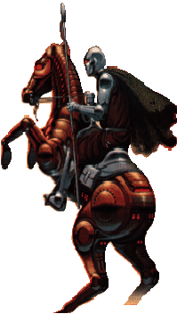

Reading
Reading-related Links
-
The English Server, providing
electronic texts of classic English literature.
-
AwardWeb: A valuable
reference for anyone who doesn't have the time to read all the decent
sci-fi available.
Personal Favorites

Science Fiction
-
Robert Heinlein:
-
Stranger in a Strange Land
-
The Moon is a Harsh Mistress
-
James Hogan:
-
Voyage from Yesteryear
-
Code of the Lifemaker
-
Arthur C. Clarke:
-
Rendezvous with Rama series
-
The Fountains of Paradise
-
Tales from the White Hart
-
Orson Scott Card:
-
Ender's Game series
-
A Planet Called Treason
-
Lois McMaster Bujold:
-
Falling Free
-
...and all the Miles Vorkosigan books...
-
Connie Willis:
-
Doomsday Book
-
To Say Nothing of the Dog
Fantasy
-
J.R.R. Tolkien:
-
The Hobbit
-
Lord of the Rings
-
Piers Anthony:
-
early Xanth series
Classic Fiction
-
George Orwell:
-
Animal Farm
-
1984
-
Jane Austen
-
Pride and Prejudice
-
Persuasion
-
John Steinbeck
-
Cannery Row
-
The Pearl
Serious nonfiction with particular importance to me
-
On education: Jonathan Kozol, The Night is Dark and I Am Far
from Home
-
On love and sexuality: Easton and Liszt, The Ethical Slut
-
On consensual crimes: Peter McWilliams, Ain't Nobody's Business
If You Do
-
On genocide in Rwanda: Philip Gourevitch, We Wish to Inform You
That Tomorrow We Will be Killed With Our Families
baford@cs.utah.edu